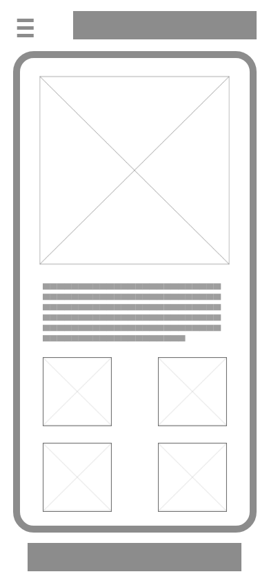
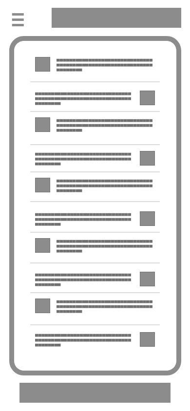
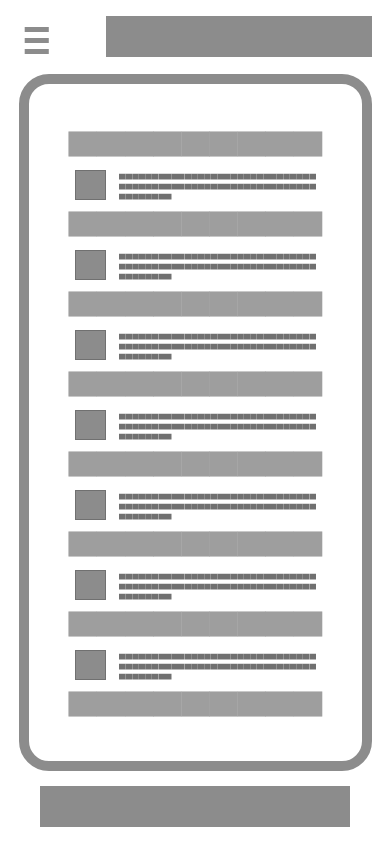
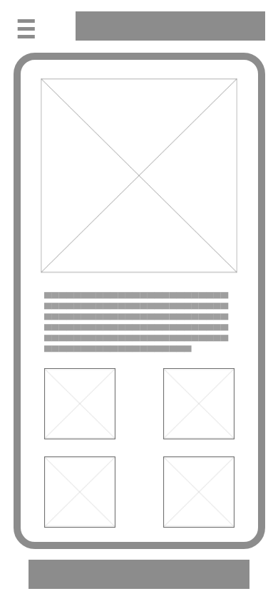
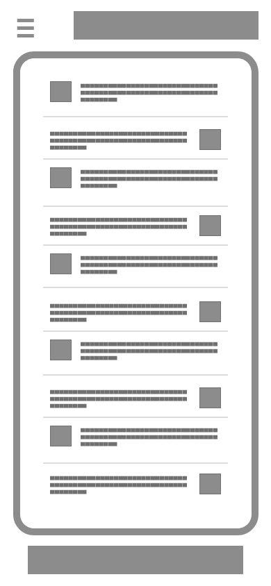
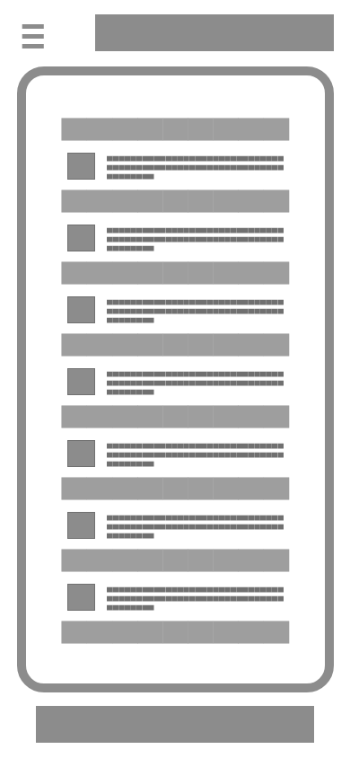
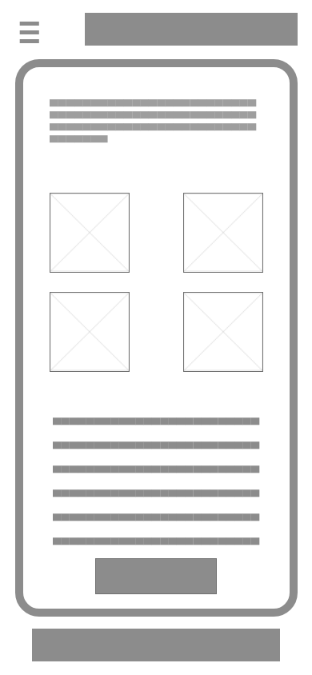
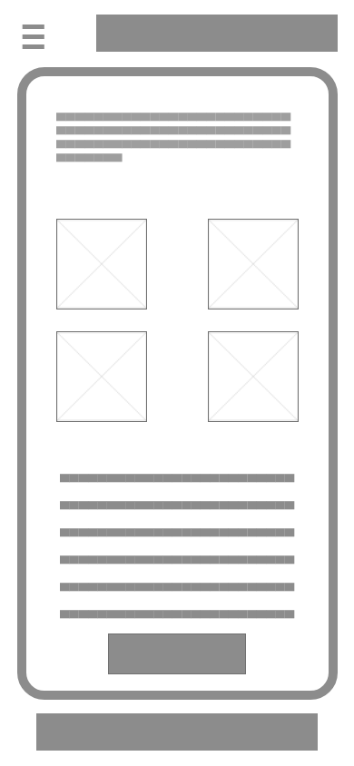

Overview
This project was somewhat unique in that it's geared more towards kids and younger teens than it is adults. I have always loved virtual pet sites and got my start with code because of Neopets, so I wanted to gear this toward a similar audience (although I know sites like Neopets also have largely adult audiences, myself still included, so I didn't want to go so far that the site would be appealing to kids alone). I wanted to utilize a bright, fun color scheme and bouncy text and animations. The pets were all drawn by me and so far I have three species included, but I would love to come up with more in the future along with other fun colors that they could change into. Much of the live site is relatively blank as our focus was to be on about five pages due to this needing to be completed within a single semester. I put most of my focus on the homepage and also worked on the account settings, user profile, my pets, our team, and contact us pages. The site was created using the mobile-first approach and is fully responsive. I used bootstrap for the carousel on the homepage but built everything else from scratch with HTML, CSS, and a little bit of JavaScript. I used a variety of CSS animations throughout the site and the layout was built with CSS grid as the foundation.

Planning
Use Case Scenarios
Activity Scenario:
Sara has just turned fourteen and received a new computer. She navigates to Demopets, a virtual pet game her friends have told her about. She clicks sign up and chooses a username and password with her parents' help. She successfully creates an account and regularly begins logging into Demopets to play with her pets and chat with her friends.
Interaction Scenario:
Brian, a recently-signed-up Demopets user in his first year of college, logs into the site to restock his shop in order to get in-game currency. He wants this to be quick and efficient as it’s late in the evening now that he’s finished with classes for the day. He clicks the link for his inventory, then chooses an item from his list. The item immediately pops up with a small menu of options, including "Add to Shop". He then decides he wants to add multiple items and selects an option from the menu at the top that will allow him to checkmark multiple before adding them. He completes his task quickly then logs out for the day to allow his virtual wealth to accumulate.
Problem Scenario:
Angela is frustrated with her experience on other pet sites as she is mainly a cell-phone user when it comes to browsing the internet. She slowly stops trying to log into these sites as it is a frustrating experience and takes too much time and effort when she just wants to play a casual game during her lunch break. She never becomes an active user and eventually abandons these sites altogether in hopes that something better will come along.
Information Design Scenario:
Grant, a high school senior, enjoys playing Demopets in his free time. He is looking for a way to find help from other users on how to beat the latest game. He finds the forum tab in the main navigation, then clicks it to view the sub-forums. They are all laid out neatly on the page, so he easily discovers the one he is looking for. He clicks on the Help sub-forum and finds a neatly-organized list of topics from other users. He clicks the large icon with an addition sign in order to create his own topic, then promptly fills out the form and clicks the submit button.
Wireframe
 





 
